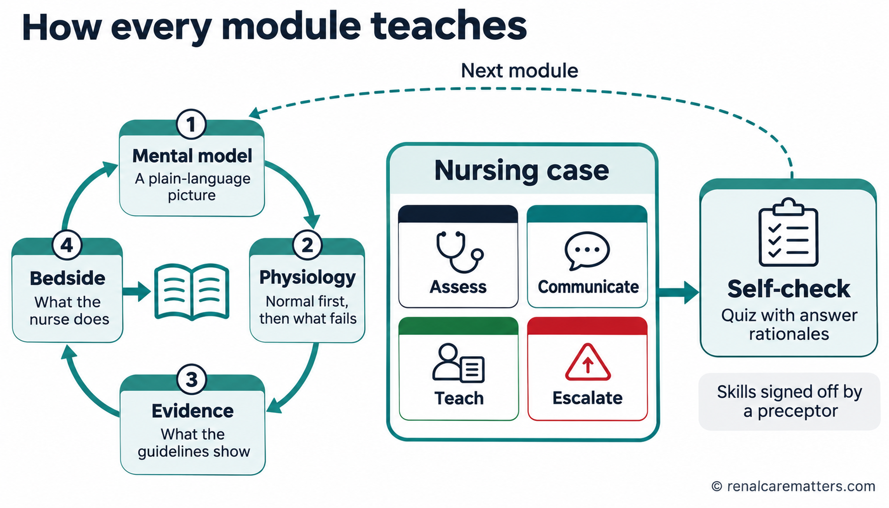
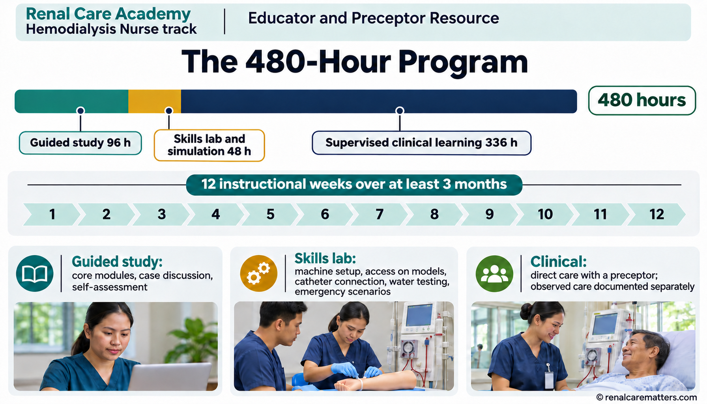
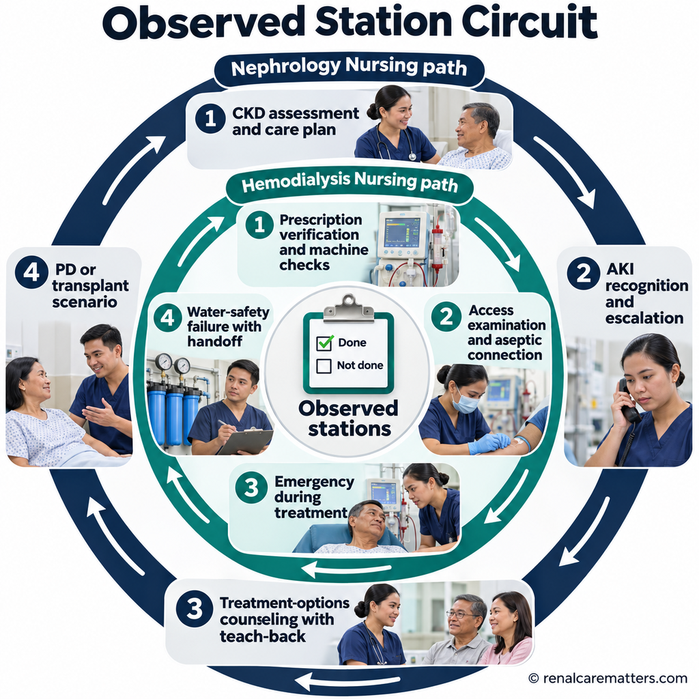

Two different things: a public series and a provider-led program
The public modules are self-study. Any nurse can read them, and they can go live independently once their content has been clinically reviewed. A provider-led training program is a separate undertaking. It needs a named training provider, prerequisites, supervised clinical placement, preceptors, practical assessment, and whatever recognition the provider seeks from regulators. This page offers a starting design for such a program. Everything on it is a proposal for a provider to adapt; nothing here has been accepted by the Department of Health (DOH), the Professional Regulation Commission (PRC), or the Philippine Society of Nephrology (PSN), and no Continuing Professional Development (CPD) units are attached.
What the Philippine sources do require is narrower. The DOH licensing order requires each hemodialysis (HD) nurse to hold a certificate of training in the nursing care of renal dialysis patients from a competent training provider, together with Basic Life Support (BLS) training, and each shift to have at least one nurse with Advanced Cardiovascular Life Support (ACLS) training.1 The PSN 2024 guidelines describe a structured training program of three months or more and list its topics, without fixing a number of hours.2 The scope of nursing practice itself is set by the Philippine Nursing Act.3
Twelve instructional weeks over at least three months
The proposal below totals 480 hours. That figure is a course-design choice informed by an example of a 480-hour competency program listed with the PRC; it is not a regulatory minimum, and a provider should confirm what its own regulators and receiving facilities accept. If the PSN duration is adopted, the twelve instructional weeks are scheduled across at least three calendar months.
| Component | Proposed hours | What it contains |
|---|---|---|
| Guided study | 96 | The core modules with facilitated discussion of each case and self-assessment; assigned reading |
| Skills laboratory and simulation | 48 | Machine setup on unconnected equipment, access examination and cannulation on models, catheter connection, water testing, emergency scenarios |
| Supervised clinical learning | 336 | Direct patient care with a preceptor; observed care and simulation are documented separately |
| Total | 480 |
Clinical emphasis by path. For the Hemodialysis Nursing path: complete treatment encounters from pre-assessment to discharge, observation of the water system with the technician, and inpatient HD where available. For the Nephrology Nursing path: a renal ward or chronic kidney disease (CKD) clinic, HD exposure, and observational exposure to peritoneal dialysis (PD) and transplantation where a program exists. The provider sets the number of encounters and validates each competency on its own equipment and procedures.


What finishing the program could require
- A score of at least 80% on a separate written examination set by the provider. The public self-assessments are formative and are not that examination.
- A passing case presentation or quality audit (the capstone in Module 12).
- Every safety-critical practical step demonstrated without prompting.
- Preceptor sign-off of the competency checklist, with simulation and observed patient care recorded separately.
- Current BLS for all, and ACLS as the facility’s staffing plan requires.
A 60-item final, weighted by path
If a provider writes a final examination, these weights reflect the emphasis of each path. They are course weights proposed for this series. They are not the weights of any certification examination and should be mapped separately if a learner is also preparing for one.
| Hemodialysis Nursing path | Items | Nephrology Nursing path | Items |
|---|---|---|---|
| Chronic HD (Modules 6, 7, 9) | 30 | CKD and its complications (Modules 1 to 3) | 20 |
| Adult kidney disease (Modules 1 to 3, 5) | 15 | Acute kidney injury (Module 4) | 10 |
| Acute kidney injury and acute HD (Module 4) | 9 | HD (Modules 6 to 9) | 12 |
| Water and dialysate (Module 8) | 6 | PD and transplantation (Modules 10, 11) | 10 |
| Conservative care, special populations, professional practice (Modules 5, 11, 12) | 8 | ||
| Total | 60 | Total | 60 |
Observed stations
| Hemodialysis Nursing path | Nephrology Nursing path |
|---|---|
| 1. Prescription verification and machine checks | 1. CKD assessment and care plan |
| 2. Access examination and aseptic connection | 2. Acute kidney injury recognition and escalation |
| 3. Emergency during treatment | 3. Treatment-options counseling with teach-back |
| 4. Water-safety failure with handoff | 4. PD or transplant scenario |
Capstone. A fictional or fully de-identified renal case, or a small quality audit with a measurable follow-up outcome, presented to the preceptor and unit team. Audits of observed practice with feedback were part of the prevention bundle associated with fewer access-related bloodstream infections in a multicenter collaborative, and structured training with reassessment is recommended for PD teaching.6,5

How the modules align with the PSN Basic Course for Renal Nurses
The PSN offers face-to-face basic training for renal nurses. The table below groups the content such training usually covers into broad areas, in our own words, and points to the modules and sections that teach each one, so a nurse can prepare before a course and review after it. The grouping is ours; it does not reproduce any PSN program, it does not mean the PSN has reviewed or endorsed these modules, and completing them does not replace PSN training or certification.
| Content area | Where to study it here | Coverage | Notes |
|---|---|---|---|
| Assessing the patient before and after treatment | Module 1 · At the bedside, Module 7 · Examination in depth, Module 9 · The session, Module 9 · Before connecting, Module 9 · After the session, Module 9 · Ending treatment | Covered | Adds an explicit call-before-connecting decision and discharge readiness criteria for the end of treatment. |
| Kidney failure and choosing a kidney replacement therapy | Module 1 · Physiology, Module 2 · Mental model, Module 4 · Caring during kidney support, Module 5 · Pathways compared, Module 5 · When to start, Module 5 · The conversation, Module 5 · Conservative and end-of-life care | Covered and extended | Adds shared decision-making with teach-back and conservative kidney management as a pathway alongside dialysis and transplantation. |
| The routine laboratory panel | Module 1 · Reading the tests, Module 3 · Anemia in practice, Module 3 · Bone and mineral care, Module 6 · Measuring adequacy, Module 7 · Unit infection control, Module 9 · Monthly laboratory panel | Covered | Links each monthly result to a nursing action, including hepatitis serology and station assignment. |
| Medicines in HD care | Module 3 · Anemia in practice, Module 3 · Bone and mineral care, Module 3 · Medicine safety, Module 9 · Medicines and dialysis, Module 9 · hemodialysis drug guide | Covered | Emphasizes timing relative to dialysis and the checks before giving a medicine at the station; doses follow the order. |
| Eating well on dialysis | Module 3 · Diet by stage, Module 3 · Eating on hemodialysis, Module 3 · Filipino meals on hemodialysis | Covered | Teaching is framed in familiar Filipino food terms, with teach-back on salt, fluid, potassium, and binder timing. |
| The machine, its alarms, and its safety systems | Module 6 · Blood circuit, Module 8 · Checks and release, Module 8 · Dialysate and alarms, Module 8 · Disinfection and reuse, Module 9 · Intradialytic symptoms | Covered | Covers blood-side and dialysate-side alarms by cause; alarm limits and settings stay with the manufacturer’s manual and unit procedure. |
| Reading and verifying the HD prescription | Module 6 · The dialyzer, Module 6 · Dialysate in depth, Module 6 · Anticoagulation, Module 6 · Measuring adequacy, Module 6 · Target weight | Covered | Each prescription element is tied to what the nurse verifies at the chair, with target-weight reassessment as a nursing task. |
| How dialysis clears blood, and the forms of HD | Module 6 · Principles, Module 6 · Blood circuit, Module 6 · The dialyzer, Module 10 · How it works, Module 13 · Online hemodiafiltration, Module 13 · continuous kidney replacement therapy modes | Covered and extended | Module 13 goes deeper into hemodiafiltration and continuous therapies for nurses in units that offer them. |
| Infection prevention in the unit | Module 7 · Catheters in depth, Module 7 · Unit infection control, Module 7 · Tuberculosis, Module 7 · Vaccination program, Module 7 · Respiratory seasons, Module 8 · Monitoring and roles, Module 12 · Surveillance and methods, Module 12 · Staff safety | Covered and extended | Adds infection surveillance and audit with feedback as unit quality work, plus staff exposure management. |
| Vascular access care | Module 7 · Maturation, Module 7 · Examination in depth, Module 7 · Cannulation technique, Module 7 · Catheters in depth, Module 7 · Patient teaching | Covered and extended | Goes deeper into physical examination, cannulation technique, hemostasis, and patient self-care teaching. |
| Emergencies in the unit | Module 9 · First response, Module 9 · Unit emergencies, Module 8 · Contaminant syndromes, Module 12 · Disaster readiness, Module 14 · Crisis response | Covered and extended | Adds unit-wide events such as power failure and evacuation, and rehearses first actions in Stations D, E, and F. |
| Problems during and after treatment | Module 9 · Intradialytic symptoms, Module 9 · Preventing hypotension, Module 9 · First response, Module 9 · After the session, Module 8 · Contaminant syndromes | Covered and extended | Adds prevention of intradialytic hypotension by mechanism and the cluster rule for symptoms shared by several patients. |
| Professional conduct | Module 12 · Professionalism, Module 12 · Professional conduct, Module 12 · Ethics, Module 12 · Records and privacy | Covered | Connects professional conduct to documentation, confidentiality, and the legal record. |
| The dialysis team and its roles | Module 12 · Team and delegation, Module 12 · Records and privacy, Module 8 · Monitoring and roles | Covered | Adds delegation and accountability, including who answers for water safety when the technician tests. |
| Emotional adjustment and mental health | Module 14 · Adaptation, Module 14 · Screening, Module 14 · Memory and sleep, Module 14 · Caregivers, Module 14 · Crisis response | Covered | Adds screening and referral steps and support for caregivers. |
| Distressed and disruptive behavior | Module 14 · Disruptive behavior, Module 14 · De-escalation, Module 14 · Agreements and limits, Module 12 · Ethics | Covered | Practiced as a de-escalation station (Station J below), with a first check for physical causes of agitation. |
| Living longer and better on dialysis | Module 14 · Exercise, Module 14 · Frailty and falls, Module 14 · Missed and shortened sessions, Module 14 · Symptom burden, Module 14 · Living well, Module 6 · Measuring adequacy, Module 9 · Preventing hypotension | Covered | Adds exercise, falls prevention, and goal-setting alongside adequate dialysis and fewer hypotensive episodes. |
| Hands-on practice | Module 9 · First response, Module 7 · Cannulation technique, Module 6 · Blood circuit | Partly covered | The module cases and the OSCE stations below can serve as ready-made material for hands-on sessions. |
| Written assessment | — | Partly covered | The module self-assessments are formative practice; a provider writes its own examination using the 60-item blueprint on this page. |
| Practical examination (OSCE) | — | Covered | Stations A to J below are written for this format and record results on the preceptor competency checklist. |
| Pretests and post-tests | — | Covered | The random-draw self-assessment bank of each module serves as pretest and post-test, and each module case supports case-based discussion. |
A suggested three-day blended schedule
One way a provider could pair the self-study modules with a three-day face-to-face course. It is a suggestion, not a PSN schedule.
Before the course. Suggested only. Before the first day, complete Modules 1, 6, 7, 8, and 9 in Hemodialysis Nursing path order, with each self-assessment. Nurses on the Nephrology Nursing path also complete Modules 2 to 5. Modules 3, 12, and 14 are best completed before the second day.
Day 1: Dialysis fundamentals: the circuit, the prescription, the machine, and the treatment session
- Morning. Pretest drawn from the Module 1, 5, 6, and 8 banks; lectures paired with the circuit and alarm sections; walk-through of the alarm and water stations Modules: Module 1, Module 5, Module 6, Module 8. Stations: D, H.
- Afternoon. Lectures paired with Module 9 and Module 3 cases; practice of assessment, hypotension, and medication stations; post-test from the Module 6 and 9 banks with case-based discussion Modules: Module 3, Module 9. Stations: A, E, G.
Day 2: Access, infection, nutrition, the team, and living well on dialysis
- Morning. Pretest from the Module 3 and 7 banks; lectures paired with access and nutrition sections; cannulation, catheter, and teaching stations Modules: Module 3, Module 7. Stations: B, C, I.
- Afternoon. Lectures paired with Modules 12 and 14; de-escalation role-play; review of team roles in water safety Modules: Module 12, Module 14. Stations: J.
Day 3: Emergencies, practical assessment, and sign-off
- Morning. Emergency lecture paired with unit-emergency and readiness sections; hands-on simulated emergencies; provider-written final examination Modules: Module 9, Module 12. Stations: D, E, F.
- Afternoon. OSCE circuit of selected stations, debrief, and entry of results on the competency checklist Modules: Module 7, Module 8, Module 9, Module 14. Stations: A, B, C, D, E, F, G, H, I, J.
After the course. Over the following weeks, the learner completes the remaining modules and practices under a preceptor on real treatments. Competencies passed in simulation are signed again only after observed patient care, and the checklist is signed off when every safety-critical step is shown without prompting.
Pretests and post-tests. Each module’s self-assessment draws a new random set of questions from its bank on every attempt, so the same bank can serve as a pretest before a course day and as a post-test after it. Before each day, learners take the banks for that day’s modules and note the score; after the day, they retake them and note the new score. Record both scores and the date beside the module on the preceptor competency checklist, and use low-scoring topics to direct the next day’s discussion. The scores are formative only: they guide study, they are not a pass mark, and they do not replace the provider’s final examination or the OSCE.
Objective structured clinical examination (OSCE) station bank
Each station lists the task, the setup, the observable steps, and the critical errors. Steps follow the modules and the unit’s approved procedures; the examiner replaces any step that differs from local protocol before use. Run stations on a simulation arm, mannequin, or unconnected machine, never on a patient.
Station A: Pre-dialysis assessment and the decision to call 10 minutes
Task. Assess a patient arriving for treatment and decide whether to start as prescribed or call the physician before connecting. State the decision and the reason. Setup. Standardized patient or mannequin; scenario card with weight, vital signs, and history since the last session; treatment sheet and order; BP cuff, thermometer, pulse oximeter, scale. Study: Module 1, Module 7, Module 9.
| Observable step | Done | Not done |
|---|---|---|
| Performs hand hygiene and confirms identity with two identifiers. | ||
| Asks how the patient has been since the last session, including chest pain, breathlessness, fever, falls, and bleeding. | ||
| Measures weight and calculates the gain against the target weight. | ||
| Measures BP, pulse, temperature, and oxygen saturation, sitting and standing if dizzy. | ||
| Examines for edema and listens to breathing. | ||
| Examines the access, or the catheter exit site, before connection. | ||
| Asks which medicines were taken or held today, by name, and records the answer. | ||
| Asks about recent procedures, bleeding, or anticoagulants that bear on the anticoagulation order. | ||
| Compares findings with unit thresholds and standing orders. | ||
| States the decision to start or to call first, with the finding that drives it. | ||
| Reports in Situation, Background, Assessment, Recommendation (SBAR) form when calling, and documents. |
Critical errors (any one fails the station):
- Connects a patient with a call-first finding (such as fever, chest pain, or no thrill) without notifying the physician.
- Does not examine the access before connecting.
- Omits identity confirmation.
Rotate scenario cards so that some patients are safe to start and others need a call; the decision and its reason are what is scored.
Station B: Access examination and cannulation on a simulation arm 10 minutes
Task. Examine the fistula on a simulation arm, choose needle sites, cannulate, and secure the needles as for treatment. Setup. Simulation arm with fistula and thrill or bruit simulation; fistula needles, tourniquet, antiseptic, gauze, tape, gloves, mask; site-rotation diagram in a sample record. Study: Module 7.
| Observable step | Done | Not done |
|---|---|---|
| Performs hand hygiene and confirms the patient washed the access arm. | ||
| Inspects the whole arm, comparing both sides, and the skin over needle areas. | ||
| Palpates the thrill along the access and auscultates the bruit, describing the findings. | ||
| Avoids thin, shiny, or scabbed skin over an aneurysm and any area with signs of infection. | ||
| Selects sites by rope-ladder rotation using the record diagram. | ||
| Applies a light tourniquet for a fistula only, per unit procedure. | ||
| Cleans the skin with the unit antiseptic and allows it to dry without re-touching. | ||
| Places the arterial needle upstream and the venous needle pointing toward the heart. | ||
| Keeps the needle tips apart by the distance the unit procedure states. | ||
| Releases the tourniquet once the needles are in place. | ||
| Tapes in the unit’s standard pattern, loops and anchors the lines, and leaves the site visible. | ||
| Documents sites, findings, and any difficulty. |
Critical errors (any one fails the station):
- Cannulates through compromised skin over an aneurysm or an infected area.
- Places the venous needle against the direction of flow.
- Breaks asepsis after skin preparation without re-cleaning.
- Uses a tourniquet on a graft.
Ask the candidate to explain, using the simulation arm, why the comfortable usual spot is the one being worn out.
Station C: Catheter connection with scrub-the-hub 8 minutes
Task. Inspect a tunneled catheter and connect it to a primed circuit using aseptic technique. Setup. Mannequin with a tunneled catheter and exit-site dressing; primed bloodlines; masks, sterile gloves, antiseptic pads per unit protocol, syringes, sterile caps, dressing materials. Study: Module 7.
| Observable step | Done | Not done |
|---|---|---|
| Puts on a mask and asks the patient to wear one or turn the head away. | ||
| Performs hand hygiene and puts on gloves. | ||
| Inspects the exit site and tunnel for redness, drainage, tenderness, a visible cuff, or outward movement. | ||
| Asks about fever or chills since the last session. | ||
| Scrubs each hub with the unit antiseptic and allows it to dry, per unit protocol. | ||
| Never leaves a hub open to air; keeps clamps closed while caps are off. | ||
| Withdraws and discards the lock solution as the procedure directs. | ||
| Checks that each lumen draws back easily, without forceful flushing. | ||
| Connects the bloodlines aseptically and checks every connection is tight. | ||
| States that the catheter is used for dialysis only unless the nephrologist orders otherwise. | ||
| Documents exit-site findings and any flow problem. |
Critical errors (any one fails the station):
- Connects without hub disinfection, or touches a disinfected hub with a non-sterile surface.
- Flushes forcefully against resistance.
- Uses the catheter despite a visible cuff, migration, or fever without notifying the physician.
Add a card stating chills began during the last session; the candidate should treat it as a possible bloodstream infection and notify before use.
Station D: Machine alarm response: pressure alarm and needle dislodgement 8 minutes
Task. Respond to a high venous pressure alarm, then to a venous needle found out of the arm with blood on the bedding. Setup. HD machine in training mode or a printed alarm screen; simulation arm with taped needles and connected lines; simulated blood; gloves, gauze; scenario cards in two stages. Study: Module 6, Module 7, Module 9.
| Observable step | Done | Not done |
|---|---|---|
| Looks at the patient and the access before the screen. | ||
| Checks the venous line for kinks, clamps, or compression under the arm or body. | ||
| Inspects the needle site for swelling or pain before restarting the pump. | ||
| Inspects the venous chamber for clots. | ||
| States that limits are not widened and the alarm is not reset until the cause is found. | ||
| States that the venous pressure alarm may not sound when a needle comes out. | ||
| On finding dislodgement, stops the blood pump and clamps the lines. | ||
| Applies firm direct pressure to the site with gloved hand and gauze. | ||
| Calls for help and stays with the patient. | ||
| Assesses consciousness, breathing, pulse, and BP, and lays the patient flat. | ||
| Estimates blood loss and notes the time. | ||
| States that fluids, oxygen, and any return of blood follow protocol and physician direction, and that an incident report is filed. |
Critical errors (any one fails the station):
- Widens alarm limits or resets repeatedly without looking for the cause.
- Leaves the pump running once dislodgement is seen.
- Leaves the patient to fetch help instead of calling.
Reveal the dislodgement card only after the candidate has dealt with the pressure alarm, to test whether the access is kept in view.
Station E: Intradialytic hypotension: first actions 8 minutes
Task. Ninety minutes into treatment the patient yawns, feels nauseated, and has a falling BP. Give first actions and report. Setup. Mannequin or standardized patient in a reclining chair; machine or printed screen showing fluid removal progress; BP readings on cards; treatment sheet. Study: Module 9.
| Observable step | Done | Not done |
|---|---|---|
| Recognizes the early signs and rechecks BP and pulse. | ||
| Stops or minimizes fluid removal. | ||
| Reclines the patient with legs raised if not breathless. | ||
| Checks responsiveness and the access for bleeding. | ||
| Checks capillary glucose in a patient with diabetes before attributing symptoms to hypotension. | ||
| Gives fluid or oxygen only as the protocol or order allows. | ||
| Notifies the physician. | ||
| States that no prompt recovery, chest pain, arrhythmia, or altered consciousness makes it an emergency. | ||
| Asks what was taken or eaten before treatment and the weight gain. | ||
| Documents readings, actions, and response at the time. | ||
| Reports the pattern for prescription review: timing into treatment, weight gain, and removal rate. |
Critical errors (any one fails the station):
- Continues full fluid removal while the patient is symptomatic.
- Raises the legs of a breathless patient.
- Treats persistent hypotension as routine without escalation.
A second card in which BP does not recover tests whether the candidate widens the differential to cardiac causes, bleeding, or sepsis.
Station F: Hemolysis or air entry: do not return blood 8 minutes
Task. Respond to a patient with chest and back pain whose venous line blood looks cherry-red, or, on the alternate card, to an air detector alarm with foam in the venous line. Setup. Machine or printed screen; bloodlines with colored fluid simulating translucent blood, or a foam-filled venous chamber; mannequin; scenario cards; oxygen equipment. Study: Module 8, Module 9.
| Observable step | Done | Not done |
|---|---|---|
| Stops the blood pump and clamps the lines. | ||
| States clearly: do not return the blood. | ||
| For air: does not override the air detector or venous clamp. | ||
| Calls for help and the physician; stays with the patient. | ||
| Gives oxygen and positions the patient per the unit emergency protocol. | ||
| Monitors heart rhythm and vital signs. | ||
| For hemolysis: prepares for urgent potassium and hemoglobin tests by order. | ||
| Keeps the circuit, dialyzer, and dialysate for investigation. | ||
| Checks the other patients on the same water or concentrate supply. | ||
| Applies the cluster rule and notifies the technician and medical director. | ||
| Records the time, findings, actions, and lot numbers. |
Critical errors (any one fails the station):
- Returns blood through the circuit.
- Silences or overrides the air detector to continue.
- Fails to check other patients when hemolysis is suspected.
Use either card; the critical behavior in both is stopping and not returning the blood.
Station G: Medication timing and monthly laboratory review 10 minutes
Task. Review this month’s results and the medication order for one patient, decide which medicines are given at this session and when, and state what you would query. Setup. Sample medication order including an erythropoiesis-stimulating agent, intravenous (IV) iron, an IV vitamin D analog, an antibiotic removed by dialysis, and an antihypertensive; a monthly laboratory sheet; treatment sheet. No doses are tested. Study: Module 3, Module 9.
| Observable step | Done | Not done |
|---|---|---|
| Confirms patient identity and allergies at the chair. | ||
| Reads the timing of each medicine relative to dialysis from the order. | ||
| Schedules a medicine removed by dialysis after treatment, or late in the session if the order says so. | ||
| Checks BP and the latest hemoglobin against the order before an erythropoiesis-stimulating agent. | ||
| Asks about active infection before IV iron and states readiness for a reaction. | ||
| Checks calcium and phosphate against the order before an IV vitamin D analog. | ||
| Asks which BP medicines were taken today and records the answer. | ||
| Identifies results outside the expected range and links each to a nursing action. | ||
| Asks the prescriber or pharmacist when the order is silent on timing. | ||
| Records each dose on the treatment sheet so it is neither omitted nor given twice. |
Critical errors (any one fails the station):
- Gives a medicine that the laboratory results or order criteria indicate should be held, without querying.
- Gives a dialyzable antibiotic before treatment when the order specifies after.
- Omits identity or allergy confirmation.
Build one discrepancy into the laboratory sheet, such as high calcium and phosphate with a vitamin D analog due, and score whether it is queried.
Station H: Water and residual-disinfectant tests and the release decision 8 minutes
Task. Before the first connection of the day, review the water log and test a machine for residual disinfectant, then decide whether treatment may start. Setup. Sample water-room log with today’s total chlorine entry blank or above threshold (examiner’s choice); total chlorine and residual-disinfectant test strips with expiry dates; rinse-water sample; unit thresholds sheet. Study: Module 8.
| Observable step | Done | Not done |
|---|---|---|
| Locates today’s total chlorine result after the carbon tanks in the log. | ||
| Checks that the test was read at the correct time with in-date reagent and recorded by a named person. | ||
| States that a blank entry or a result above the action threshold means no patient is connected on that supply. | ||
| Notifies the charge nurse, technician, and nephrologist and documents the hold. | ||
| Checks the machine shows no chemical-cycle message and the rinse was completed. | ||
| Tests the rinse water with the strip made for that disinfectant, after the rinse and before priming. | ||
| Reads the strip at the time its instructions state. | ||
| Rinses and retests if the result is positive or uncertain. | ||
| Signs the log only for results personally seen. | ||
| States the release decision and its reason. |
Critical errors (any one fails the station):
- Connects a patient when the chlorine test is missing or failed.
- Signs for a result not personally seen.
- Releases a machine with a positive or unread residual-disinfectant test.
Have a confederate technician offer to test after treatments start; the candidate should decline politely and hold.
Station I: Patient teaching with teach-back 10 minutes
Task. Teach a patient either salt, fluid, and potassium control between sessions, or daily fistula self-care with bleeding at home, and confirm understanding with teach-back. Setup. Standardized patient with a family member; patient profile card with weight gains and potassium trend, or with a new fistula; food photos or common Filipino food packages; simulation arm. Study: Module 3, Module 5, Module 7.
| Observable step | Done | Not done |
|---|---|---|
| Introduces self, confirms identity, and asks what the patient already knows. | ||
| Includes the family member the patient wants present. | ||
| Uses plain language in the patient’s preferred language. | ||
| Limits teaching to two or three key points. | ||
| Uses familiar food terms, such as fish sauce, soy sauce, and instant noodles, or demonstrates on the patient’s own arm. | ||
| For access: teaches feeling the thrill daily and calling the same day if it changes. | ||
| For access: teaches direct pressure with the arm raised for a bleeding needle site. | ||
| Asks a teach-back question that places responsibility on the teacher. | ||
| Re-explains differently when the answer shows a gap, and asks again. | ||
| Documents what was taught, to whom, and what was demonstrated. |
Critical errors (any one fails the station):
- Asks only “Do you understand?” without teach-back.
- Gives incorrect safety advice, such as a tight band instead of direct pressure for bleeding.
The standardized patient gives one wrong answer on the first teach-back; score the re-teach.
Station J: De-escalation of a distressed or disruptive patient 10 minutes
Task. A connected patient is shouting, demanding to stop early, and pulling at the lines. Calm the situation, keep the patient and others safe, and report. Setup. Standardized patient in a reclining chair with simulation access and lines; machine or printed screen; a second actor as a neighboring patient; incident report form. Study: Module 9, Module 12, Module 14.
| Observable step | Done | Not done |
|---|---|---|
| Approaches calmly, at an angle, keeping a safe distance and an exit clear. | ||
| Calls for a second staff member early. | ||
| Checks the access and lines are secure and stops the pump if they are at risk. | ||
| Checks BP and glucose to exclude hypotension or low blood sugar as the cause of agitation. | ||
| Uses the patient’s name, a low voice, and short sentences. | ||
| Listens and acknowledges the feeling without arguing. | ||
| Offers limited, realistic choices. | ||
| Explains plainly what stopping early costs, and documents the request and the time delivered. | ||
| Reassures and protects neighboring patients. | ||
| Notifies the physician and charge nurse. | ||
| Documents behavior factually and completes an incident report per unit policy. |
Critical errors (any one fails the station):
- Argues, threatens, or uses physical restraint outside unit policy.
- Ignores a physical cause such as hypotension or low blood sugar.
- Leaves the access unsecured while the patient pulls at the lines.
The actor calms only when feelings are acknowledged and choices are offered; score behavior, not the outcome.
Preceptor competency checklist
Print this section (use the print button). The rows are each module’s competencies at the shows how level and above, with the target level beside each. A does, independent item is signed only after the supervised level has been observed and the unit’s policy allows it. The statements describe what to observe; the steps themselves come from the unit’s approved procedures and the manufacturer’s instructions. Record simulation and patient care separately. Transfer the result to the facility’s own competency form if one exists.
| Learner | PRC license no. | ||
| Preceptor | Unit | ||
| Path | Hemodialysis Nursing Nephrology Nursing | Start and end dates |
Module 1: Kidney Function and Renal Assessment
| Competency and target level | Simulation or teach-back (date, initials) | Patient care (date, initials) | Preceptor comments |
|---|---|---|---|
| Demonstrates standardized seated and standing blood pressure measurement: validated device, correct cuff size, rested patient, supported arm at heart level, no talking. Shows how | |||
| Recognizes possible fluid overload with orthopnea, positions the patient upright, and delivers a structured situation-background-assessment-recommendation call including weight trend and intake and output. Shows how | |||
| Explains to a patient why daily weights, upright positioning, and a fluid review are needed, and confirms understanding with teach-back. Shows how | |||
| Measures blood pressure on real patients with standardized technique and the correct cuff size. Does, supervised | |||
| Obtains a comparable weight (same scale, time, and clothing) and states the trend against prior values. Does, supervised | |||
| Performs a focused renal assessment in priority order, assessing breathing first, then weight, blood pressure, volume signs, intake and output, symptoms, medicines, and access. Does, supervised | |||
| States and documents a judgment (stable, review today, or urgent) with the action taken, and presents each patient in under two minutes. Does, supervised |
Module 2: Chronic Kidney Disease Identification, Staging, and Progression
| Competency and target level | Simulation or teach-back (date, initials) | Patient care (date, initials) | Preceptor comments |
|---|---|---|---|
| Teaches temporary-illness (sick-day) advice from the prescriber’s written plan, including which medicines to pause and when to restart, and confirms understanding with teach-back. Shows how | |||
| Explains what estimated glomerular filtration rate (eGFR) and urine albumin-to-creatinine ratio (ACR) results mean and why the patient should ask before taking any pain reliever, confirming understanding with teach-back. Shows how | |||
| Lists dated creatinine and eGFR values from the chart and states whether chronicity is established against the Kidney Disease: Improving Global Outcomes (KDIGO) definition. Does, supervised | |||
| States the cause, glomerular filtration rate (GFR) category, and albuminuria category, or identifies that a urine ACR is missing and prompts for one. Does, supervised | |||
| Completes a kidney-focused medication reconciliation that names each prescription medicine, pain reliever, and herbal product by agent, dose, and frequency. Does, supervised | |||
| Flags nonsteroidal anti-inflammatory drug (NSAID) exposure, missing tests, and kidney-dependent doses to the prescriber using a structured handoff, without advising the patient to stop prescribed medicines. Does, supervised |
Module 15: Glomerular and Systemic Kidney Diseases
| Competency and target level | Simulation or teach-back (date, initials) | Patient care (date, initials) | Preceptor comments |
|---|---|---|---|
| Performs and charts a standardized daily weight, edema assessment, and blood pressure, and reports changes outside the ordered limits. Does, supervised | |||
| Performs and records a urine dipstick, teaches a correct 24-hour urine collection or first-morning sample, and recognizes findings that suggest relapse or glomerular bleeding. Shows how | |||
| Recognizes deep vein thrombosis, pulmonary embolism, infection with blunted fever, and rapidly progressive glomerulonephritis with lung bleeding in a simulated patient, and escalates using SBAR. Shows how | |||
| Prepares a patient for kidney biopsy: confirms consent, identity and side, the bleeding-risk checks and medicine holds required by protocol, blood pressure, and patient teaching. Does, supervised | |||
| Monitors a patient after kidney biopsy at protocol intervals, inspects each void, and recognizes and reports signs of bleeding. Does, supervised | |||
| Monitors glucose, blood pressure, blood counts, drug levels, and kidney function during glucocorticoid and immunosuppressive treatment as ordered, and reports adverse effects without changing doses. Does, supervised | |||
| Responds to a rituximab or other biological infusion reaction in simulation: stops the infusion, supports airway and circulation, and follows the reaction protocol. Shows how | |||
| Teaches a patient on mycophenolate or cyclophosphamide why pregnancy must be planned, confirms referral for contraception and fertility counseling, and checks understanding by teach-back. Shows how | |||
| Explains the inheritance of autosomal dominant polycystic kidney disease, draws a family tree with the patient, and refers interested relatives for screening while protecting confidentiality. Shows how |
Module 3: Chronic Kidney Disease Complications, Nutrition, and Medicines
| Competency and target level | Simulation or teach-back (date, initials) | Patient care (date, initials) | Preceptor comments |
|---|---|---|---|
| Demonstrates intravenous iron administration as ordered: confirms no active infection, follows product dilution and rate, observes for reaction, and stops and escalates if one occurs. Shows how | |||
| Teaches product-specific phosphate binder timing (with meals, swallowed or chewed as labeled) and confirms understanding with teach-back. Shows how | |||
| Presents hemoglobin with ferritin and transferrin saturation (TSAT), states the trend, and reports anemia with low iron indices to the physician. Does, supervised | |||
| Verifies how the patient actually takes each binder and corrects timing errors using teach-back. Does, supervised | |||
| Performs a brief nutritional screen (weight trend, appetite, intake) and arranges dietitian review for unintentional weight loss instead of further restriction. Does, supervised | |||
| Identifies one potassium- or phosphate-raising habit and gives individualized, food-based advice built on familiar Filipino dishes, not blanket bans. Does, supervised | |||
| Counsels a patient on hemodialysis using familiar Filipino meals, soups, celebrations, and low-cost protein foods, and confirms understanding with teach-back. Shows how | |||
| Links weight gain, pre-dialysis potassium and phosphate, weight trend, and a diet recall, and refers a patient at nutritional risk to the dietitian and physician. Does, supervised |
Module 4: Acute Kidney Injury and Acute Kidney Support
| Competency and target level | Simulation or teach-back (date, initials) | Patient care (date, initials) | Preceptor comments |
|---|---|---|---|
| Recognizes hyperkalemia with electrocardiogram (ECG) changes, starts continuous cardiac monitoring, calls immediately, prepares prescribed treatments, and monitors glucose after insulin per protocol. Shows how | |||
| Calculates urine output in mL/kg per hour from the patient’s weight and compares it with the acute kidney injury (AKI) criteria. Does, supervised | |||
| Checks catheter patency and bladder status by palpation or bladder scan when output falls, before assuming other causes. Does, supervised | |||
| Reviews the medication chart for kidney-harmful or accumulating agents and raises queries with the prescriber appropriately. Does, supervised | |||
| Delivers an SBAR handoff for a time-critical problem such as hyperkalemia within one minute, stating the problem and the request first. Shows how | |||
| Records hourly urine output, daily weight, and strict intake and output for patients at risk of AKI per unit protocol. Does, independent |
Module 5: Kidney Failure, Treatment Choices, and Conservative Care
| Competency and target level | Simulation or teach-back (date, initials) | Patient care (date, initials) | Preceptor comments |
|---|---|---|---|
| Presents all medically suitable pathways to the patient and chosen family using the same plain-language structure for each, so that no option sounds like the default. Does, supervised | |||
| Elicits the priorities, fears, and picture of a good day of the patient with open questions, and reflects them back without steering toward a pathway. Does, supervised | |||
| Demonstrates a teach-back prompt that places the burden on the teacher, and re-explains in a different way when the answer shows a gap. Shows how | |||
| Uses teach-back after modality education with a real patient and family, and re-teaches until the patient can describe the chosen pathway in their own words. Does, supervised | |||
| Identifies at least two practical barriers such as transport, cost, housing, or caregiver availability, and refers to the social worker or benefits staff instead of quoting entitlements. Does, supervised | |||
| Opens an advance care planning conversation as a routine part of kidney care, asking about goals, worries, and who should speak for the patient. Shows how | |||
| Documents the decision conversation, including what the patient said in their own words, stated goals, who was present, and that the physician was informed. Does, supervised |
Module 6: Hemodialysis Principles, Prescription, and Adequacy
| Competency and target level | Simulation or teach-back (date, initials) | Patient care (date, initials) | Preceptor comments |
|---|---|---|---|
| Responds to simulated arterial, venous, and transmembrane pressure alarms on a training machine by checking the patient, access, and lines before silencing or resetting. Shows how | |||
| Verifies every hemodialysis prescription element against the current order using two patient identifiers before treatment, including dialyzer, time, flows, dialysate, anticoagulation, and target weight. Does, supervised | |||
| Calculates the fluid-removal goal including saline, intravenous medicines, and drinks given during treatment, and the hourly rate in mL per hour and mL/kg per hour. Does, supervised | |||
| Calls the physician before starting when the calculated ultrafiltration rate or weight gain exceeds the unit policy limit, with a structured handoff and options to request. Does, supervised | |||
| Compares delivered with prescribed treatment time on treatment records and identifies shortened sessions as a cause of low delivered adequacy. Does, supervised | |||
| Draws pre- and post-dialysis urea samples using the written unit method, so that the measured dose reflects the treatment delivered. Does, supervised | |||
| Teaches salt and fluid control between sessions, linking weight gain to safe fluid removal and full treatment time, and confirms understanding with teach-back. Shows how |
Module 7: Hemodialysis Vascular Access and Infection Prevention
| Competency and target level | Simulation or teach-back (date, initials) | Patient care (date, initials) | Preceptor comments |
|---|---|---|---|
| Protects veins for future access in every patient with kidney disease by keeping blood draws, intravenous cannulas, and blood pressure cuffs off the access arm. Does, supervised | |||
| Examines an access by looking, listening, and feeling before every cannulation, states whether it can be used, and notifies the nephrologist of a newly absent thrill. Does, supervised | |||
| Cannulates a simulation arm using rope-ladder rotation after skin preparation with the correct antiseptic and contact time, without re-touching the prepared site. Shows how | |||
| Cannulates a mature fistula or graft using rope-ladder rotation without re-touching the prepared site, and keeps needle sites and connections uncovered throughout treatment. Does, supervised | |||
| Demonstrates the response to a simulated contaminated connector: stops, does not connect, clamps, scrubs again or replaces the component, and reports the event. Shows how | |||
| Connects and disconnects a central venous catheter (CVC) using masked, closed, scrub-the-hub technique, and corrects and reports any contaminated hub or connector before proceeding. Does, supervised | |||
| Disinfects a dialysis station between patients in the correct sequence after the previous patient has left, without returning station supplies to common stock. Does, supervised | |||
| Applies the unit precautions for hepatitis B, hepatitis C, and human immunodeficiency virus (HIV), including machine and station assignment, when preparing a patient for treatment. Does, supervised | |||
| Teaches a patient and family daily thrill checks, arm or catheter protection, and home bleeding control on the patient’s own access, confirmed by teach-back. Shows how | |||
| Asks the tuberculosis and respiratory symptom screening questions at entry, masks and separates a coughing patient at once, and reports a positive screen to the charge nurse and physician. Does, supervised | |||
| Maintains each patient’s vaccination register, identifies who is due for a hepatitis B antibody check, booster, repeat series, or yearly influenza vaccine, and obtains the order in advance. Does, supervised |
Module 8: Hemodialysis Equipment, Water, and Dialysate Safety
| Competency and target level | Simulation or teach-back (date, initials) | Patient care (date, initials) | Preceptor comments |
|---|---|---|---|
| Traces the unit water path from supply to dialyzer, naming each component, what it removes, and why changing source water requires continuous verification. Does, supervised | |||
| Demonstrates a total chlorine test at a skills station, stating the sampling point, reagent expiry check, and read time. Shows how | |||
| Performs a total chlorine test at the correct sampling point with in-date reagent and correct timing, and records only the result personally read. Does, supervised | |||
| Reads and interprets the water-system log, and identifies a missing, copied, or out-of-range entry before treatment begins. Does, supervised | |||
| Holds treatment when a required test fails or is missing, states the unit action threshold, and notifies the charge nurse, technician, and nephrologist. Does, supervised | |||
| Interprets simulated conductivity, temperature, and blood-leak alarms on an unconnected machine, states the first response to each, and explains what conductivity cannot detect. Shows how | |||
| Completes the pre-treatment machine and circuit checks per the manufacturer’s manual without prompting, including concentrates, alarms armed, and a primed circuit free of air. Does, supervised | |||
| Performs and records the routine pre-treatment machine and circuit safety checks for each patient, and holds the machine when any check fails. Does, independent | |||
| Demonstrates the residual-disinfectant or germicide test used in the unit, read at the stated time, before a dialyzer is primed. Does, supervised |
Module 9: The Complete Hemodialysis Session and Complication Response
| Competency and target level | Simulation or teach-back (date, initials) | Patient care (date, initials) | Preceptor comments |
|---|---|---|---|
| Completes and documents pre-, intra-, and post-treatment assessments for three full sessions, calling the physician before connecting when a finding requires it. Does, supervised | |||
| Completes and documents pre-, intra-, and post-treatment assessments for stable patients on routine sessions. Does, independent | |||
| Ends a routine session at the prescribed time, returns blood with saline while watching the venous line, and achieves hemostasis per unit procedure. Does, independent | |||
| Rehearses hypotension, needle dislodgement, hemolysis, dialyzer reaction, air entry, and cardiac arrest drills on the unit machine using the unit protocol. Shows how | |||
| Performs first actions for symptomatic intradialytic hypotension (IDH) in the correct order: stops or minimizes ultrafiltration (UF), reclines the patient, checks blood pressure and access, and notifies the physician. Shows how | |||
| Stops the blood pump, clamps the lines, applies direct pressure, calls for help, assesses the patient, and estimates blood loss after needle dislodgement or line disconnection. Shows how | |||
| For suspected hemolysis, dialyzer reaction, or air entry, stops and clamps without overriding the air clamp, does not return blood, calls for help, and positions per protocol. Shows how | |||
| Starts chest compressions within seconds for a patient in cardiac arrest on dialysis, while a second rescuer stops the blood pump and manages the circuit. Shows how | |||
| Writes a post-event record stating delivered time and fluid removed against the prescription, patient status, actions, and who was informed, and gives an SBAR handoff. Shows how | |||
| Teaches post-dialysis safety before the patient leaves (rising in stages, home care of a bleeding needle site, low blood sugar, cramps, and thirst) and confirms understanding by teach-back. Shows how | |||
| Asks at each arrival about recovery time, dizziness or falls, bleeding at home, and low blood sugar since the last session, and reports a pattern that needs prescription review. Does, supervised | |||
| Checks each HD medicine's timing against the session and the order, holds a dose only as the order or protocol directs, and reports findings without changing a dose. Does, supervised | |||
| Completes a monthly medicine reconciliation, including over-the-counter and herbal products, and reports differences to the nephrologist. Does, supervised | |||
| Draws pre- and post-dialysis samples by the unit's method, avoiding dilution, hemolysis, and infusion lines. Does, supervised | |||
| Reviews the monthly laboratory panel, reports critical values at once, flags out-of-range values and trends with their context, and prepares them for the monthly round. Does, supervised | |||
| Explains why glucose and glycated hemoglobin behave differently on HD, checks glucose at the chair from the correct sample site per protocol, and reports low readings and disagreement between glycated hemoglobin and home readings. Does, supervised | |||
| Performs a structured foot check on a patient with diabetes during the session, documents findings, and reports any wound to the physician the same day. Does, supervised | |||
| Teaches daily foot care, safe footwear, and the timing of meals and eye examinations around dialysis days, and confirms understanding by teach-back with the patient or family. Shows how |
Module 10: Peritoneal Dialysis and Home Dialysis Nursing
| Competency and target level | Simulation or teach-back (date, initials) | Patient care (date, initials) | Preceptor comments |
|---|---|---|---|
| Describes the drain, fill, and dwell phases while observing an exchange, and states the reason for each step, including flush before fill and recording net fluid removal. Does, supervised | |||
| Performs hand hygiene and a twin-bag connection, in simulation or under supervision, without touching connector tips, and names the routes by which organisms reach the peritoneum. Does, supervised | |||
| Inspects a PD exit site and tunnel, describes the findings in the unit’s standard terms or score, and reports discharge, redness, or tenderness the same day. Does, supervised | |||
| Rehearses the peritonitis specimen workflow: keeps the first cloudy bag, confirms the dwell time, labels the specimen, and sends it before the first antibiotic dose. Shows how | |||
| Collects, or simulates collection of, a PD effluent specimen exactly as the unit directs and as ordered, with correct labeling and prompt dispatch. Does, supervised | |||
| Gives the first instruction for a contamination event (stop, clamp, call the PD unit) and for cloudy effluent (same-day assessment, bring the bag), and notifies the PD team. Does, supervised | |||
| Teaches a complete PD exchange on a training model and confirms by teach-back the learner’s responses to contamination, cloudy effluent, poor drainage, and exit-site changes. Shows how | |||
| Observes a patient or caregiver return demonstration, identifies any break in technique, and reports whether home readiness meets the PD program’s sign-off criteria. Does, supervised | |||
| Performs the routine PD clinic review of weight, blood pressure, swelling, urine volume, and home exchange records after sign-off, and reports deviations to the PD team. Does, independent | |||
| Teaches one part of the home hemodialysis curriculum to a simulated patient and care partner, giving the reason for each step, and confirms competence by full return demonstration rather than by attendance. Shows how | |||
| Explains rope-ladder and buttonhole self-cannulation, states the higher infection risk associated with buttonholes and the aseptic steps that buttonhole use requires, and teaches the access signs a patient must report the same day. Shows how | |||
| Rehearses with a simulated patient and care partner the home response to needle dislodgement, low blood pressure, a safety alarm, fever or chills, and a power failure during treatment, including when to call the program and when to call an ambulance. Shows how | |||
| Counsels a patient who asks about home hemodialysis accurately on its evidence, the requirements for water, support, and backup, and its uncertain availability and coverage in the Philippines, refers the question to the nephrologist, and includes home peritoneal dialysis as an option. Shows how |
Module 11: Transplantation and Special Populations
| Competency and target level | Simulation or teach-back (date, initials) | Patient care (date, initials) | Preceptor comments |
|---|---|---|---|
| Records and interprets hourly urine output and fluid balance for a post-operative recipient, real or simulated, and checks urinary catheter patency when output falls. Does, supervised | |||
| States the first-week findings that need urgent reporting and escalates a sudden fall in urine output, rising creatinine, graft pain, fever, or bleeding without waiting for rounds. Does, supervised | |||
| Explains trough-level timing and prepares a patient for a clinic blood draw, with the morning dose brought and taken after the sample is drawn. Does, supervised | |||
| Rehearses immunosuppressant teaching and confirms by teach-back each medicine’s name and times, the clinic-day routine, and checking every new medicine with the transplant team. Shows how | |||
| Delivers missed-dose and travel teaching using teach-back, directing the recipient to the program’s written instructions and to call the team instead of doubling doses. Does, supervised | |||
| States and applies two care adaptations each for a child, a pregnant woman, and a frail older adult on dialysis in assigned or case-based care. Does, supervised | |||
| Weighs a child on the same scale under the same conditions, measures blood pressure with a correctly sized cuff, interprets readings against pediatric reference tables, and reports fluid change as a percentage of body weight. Does, supervised | |||
| Uses a transition readiness checklist with an adolescent, seeing the young person alone for part of the visit, and plans the next self-management step with the young person and family. Shows how | |||
| Recognizes the warning signs of preeclampsia in a pregnant woman with kidney disease and reports them immediately to both the obstetric and kidney teams using a structured handoff. Shows how | |||
| At medicine reconciliation, identifies women of reproductive age taking mycophenolate or renin-angiotensin blockers, asks about pregnancy plans and contraception, and refers for preconception and contraception counseling without changing any medicine. Does, supervised |
Module 14: Living Well on Hemodialysis: Mind, Behavior, and Longevity
| Competency and target level | Simulation or teach-back (date, initials) | Patient care (date, initials) | Preceptor comments |
|---|---|---|---|
| In a simulation, asks a patient directly about thoughts of ending their life, stays with the patient, escalates through the facility's crisis pathway, and documents the patient's exact words and the actions taken. Shows how | |||
| In a role-play, prepares and takes part in a family meeting, confirming the patient's consent for what is shared and recording what was agreed. Shows how | |||
| Demonstrates sleep-hygiene and memory-support teaching adapted to a patient with cognitive impairment, using one main message, a written aid, and teach-back. Shows how | |||
| Asks a patient open questions about mood, coping, sleep, and appetite in private during a routine session, and documents the answers in the patient's words. Does, supervised | |||
| Gives the unit's mood or anxiety screening questionnaire as policy directs, records the score, and reports a positive screen to the nephrologist the same day using SBAR. Does, supervised | |||
| Responds to a new change in alertness or behavior by checking BP and blood glucose first, then reporting. Does, supervised | |||
| Reviews a patient's medicine list with the pharmacist or physician for medicines that can cause drowsiness or confusion in kidney failure, and records the outcome. Does, supervised | |||
| Teaches one sleep or memory-support strategy using teach-back, with a family member present if the patient consents. Does, supervised | |||
| Locates the facility's crisis pathway and referral contacts, and walks the preceptor through what to do if a patient describes thoughts of ending their life. Does, supervised | |||
| Checks for a medical cause, including glucose, blood pressure, oxygen saturation, pain, delirium, and disequilibrium, before attributing agitation to personality, in a simulated scenario. Shows how | |||
| Demonstrates stepwise de-escalation in a role-play: safe positioning, one speaker, calm voice, validation, real choices, clear limits, and calling for help per policy. Shows how | |||
| Applies the unit exercise program’s safety screen before intradialytic exercise for a physician-cleared patient, keeps the access visible, stops for warning signs, and records tolerance. Does, supervised | |||
| Teaches rising slowly after dialysis, home safety, and footwear to a patient or caregiver and confirms understanding using teach-back. Shows how | |||
| Recognizes frailty, repeated post-dialysis dizziness, and falls, checks standing blood pressure when indicated, and reports for review and possible referral for therapy. Does, supervised | |||
| Explores the reasons for skipped or shortened sessions without judgment, documents delivered versus prescribed time with reasons, and reports patterns to the physician. Does, supervised | |||
| Conducts a routine symptom review, including recovery time, itching, pain, cramps, restless legs, sleep, and, with permission, sexual concerns, and reports findings for treatment. Does, supervised |
Module 16: Supportive, Palliative, and End-of-Life Kidney Care
| Competency and target level | Simulation or teach-back (date, initials) | Patient care (date, initials) | Preceptor comments |
|---|---|---|---|
| Administers and scores the unit’s validated symptom questionnaire, assesses the highest-scoring symptoms in depth, and reports them with severity, trend, and effect on daily life. Does, supervised | |||
| Provides non-drug comfort measures for itch, breathlessness, nausea, pain, and restlessness as set out in the care plan, and evaluates their effect. Does, supervised | |||
| Monitors patients receiving symptom medicines for accumulation in kidney failure (drowsiness, confusion, twitching, slowed breathing, falls), holds and notifies per order or protocol, and teaches patients to avoid self-medication with anti-inflammatory pain relievers. Does, supervised | |||
| Opens and supports an advance care planning conversation that elicits goals, identifies the surrogate decision-maker, and respects Filipino family and faith preferences, in a role-played scenario. Shows how | |||
| Documents goals of care, the named surrogate, and family-meeting decisions per facility policy, and ensures the plan travels with the patient on transfer. Does, supervised | |||
| Responds in role-play to a patient who asks to stop dialysis: listens, screens for depression and suicide risk following Module 14, identifies reversible causes, and reports to the nephrologist using SBAR. Shows how | |||
| Recognizes signs that a patient may be entering the last days of life and provides comfort care, including mouth care, positioning, and management of secretions, under supervision. Does, supervised | |||
| Prepares a family, in a role-played conversation, for what to expect in the last days, at home or in hospital, including comfort measures they can give and whom to call. Shows how |
Module 17: Patient Teaching, Health Literacy, and Evidence-Based Practice
| Competency and target level | Simulation or teach-back (date, initials) | Patient care (date, initials) | Preceptor comments |
|---|---|---|---|
| Uses teach-back with a prompt that places responsibility on the nurse, recognizes a gap, and re-explains differently, in a role-play observed by an educator. Shows how | |||
| Recognizes clues to limited health literacy or numeracy, asks a normalizing question in role-play, and adapts teaching with plain language, household measures, and pictures. Shows how | |||
| Arranges teaching in the patient’s preferred language, using a bilingual colleague or appropriate interpreter instead of a child, and includes family members the patient chooses. Does, supervised | |||
| Plans and delivers a teaching episode during an HD session: assesses readiness, sets one goal with the patient, chunks content, demonstrates a skill, and obtains a return demonstration. Does, supervised | |||
| Documents a teaching session with the goal, people taught, language and method, teach-back or return demonstration in the patient’s words, barriers, and next step. Does, supervised | |||
| Uses open questions, affirmations, reflections, and summaries, elicits change talk, and helps the patient set a small, specific goal, in a motivational interviewing role-play. Shows how |
Module 12: Philippine Practice, Quality Improvement, and Capstone
| Competency and target level | Simulation or teach-back (date, initials) | Patient care (date, initials) | Preceptor comments |
|---|---|---|---|
| Locates the unit’s license, policies, incident-report form, and disaster plan, and states the nurse training and life-support requirements with their sources: the Nursing Act, DOH licensing order, and PSN guidelines. Does, supervised | |||
| Completes treatment records that are timely, factual, openly corrected, never pre-charted or backdated, and kept confidential, after preceptor sign-off. Does, independent | |||
| Conducts a short process audit, calculates the compliance rate from observed eligible opportunities, and explains what the figure does and does not show. Does, supervised | |||
| Intercepts, verifies, and reports a near miss, completing the unit’s report for a simulated event without blaming an individual. Shows how | |||
| Takes part in a root-cause-analysis role play using the five whys or a fishbone diagram and proposes a system-level corrective action consistent with a just culture. Shows how | |||
| Delivers a transfer or unit-closure handoff that states delivered treatment, current condition with warning symptoms, and disposition to the patient, family, and receiving unit. Does, supervised | |||
| Takes part in a disaster and evacuation drill, working the contact tree, checking patient emergency cards, and repeating emergency diet and warning-symptom teaching. Shows how | |||
| Performs manual blood return on the unit’s machine in a simulated power failure under preceptor observation, and records delivered time and fluid removed. Shows how | |||
| Demonstrates the immediate steps after a needlestick or splash exposure and the safe handling of sharps, chemical disinfectants, and health-care waste. Shows how | |||
| Plans, conducts, and presents a capstone quality audit or de-identified case with a measurable follow-up, assessed by the preceptor. Does, supervised | |||
| Gives and receives a complete, unhurried handoff at the stations with the records, covering each patient’s status, pending results, and concerns. Does, supervised | |||
| Raises a concern about a peer’s unsafe practice or a social media privacy breach, first directly and then to the head nurse, in a role-play. Shows how | |||
| Helps a patient or family assemble an emergency kit and a current transfer record, and confirms by teach-back what to bring and where to go if the unit is closed. Shows how | |||
| Performs an assigned role in a disaster drill and contributes findings to a blame-free after-action review that assigns dated actions with named owners. Shows how |
Module 13: Convective Therapies: Continuous Renal Replacement Therapy and Hemodiafiltration
| Competency and target level | Simulation or teach-back (date, initials) | Patient care (date, initials) | Preceptor comments |
|---|---|---|---|
| Explains convection, the replacement-fluid site, and the filtration fraction for the running treatment, and predicts how the dilution mode affects clearance and filter life. Does, supervised | |||
| Verifies each replacement-fluid or dialysate bag against the order with a second person where required, treating replacement fluid as an intravenous medicine. Does, supervised | |||
| Performs a continuous renal replacement therapy (CRRT) bag change using the machine’s bag-change function and resolves a balance or scale alarm in a skills-station drill. Shows how | |||
| Reconciles machine net removal, patient total balance, and the prescribed goal each hour, and reports a discrepancy or signs that removal is not tolerated. Does, supervised | |||
| Responds to a pressure or balance alarm by assessing the patient and circuit before the machine, never overriding air or blood-leak detectors, and documents the cause. Does, supervised | |||
| Monitors citrate or heparin anticoagulation as ordered, labeling patient and post-filter ionized calcium samples by site, and reports results outside the protocol range. Does, supervised | |||
| Recognizes low ionized calcium, citrate accumulation, and citrate excess in a simulation, checks that the calcium infusion is running, and escalates using SBAR. Shows how | |||
| Records the delivered dose as effluent dose or achieved convection volume, with downtime or missed-target reasons, and hands over using SBAR. Does, supervised | |||
| Responds in simulation to hemodiafiltration (HDF)-specific alarms, including high transmembrane pressure, a failed ultrafilter integrity test, a blood leak, and a rigor during substitution. Shows how | |||
| Verifies replacement fluid against the order, checking plasma units with a second person by the transfusion procedure, and confirms the timing of medicines that plasma exchange removes with the physician or pharmacist. Does, supervised | |||
| Recognizes a citrate reaction, low blood pressure, or an allergic reaction to plasma in a simulation, takes the first actions per protocol, and escalates to the physician. Shows how |
Final sign-off
| Written examination score (provider-set) | |
| Capstone presented (title, date) | |
| Life-support training current (BLS, ACLS; expiry) | |
| Preceptor name, signature, date | |
| Head nurse or medical director, signature, date |
Clinical review and open dependencies
High-risk content should be read by the appropriate reviewer before a provider relies on it: emergency sequences and vascular access by a senior HD nurse and nephrologist; water limits and machine checks by the unit’s technician or biomedical engineer; isolation policy by infection control; medicines by a pharmacist; and pediatric, pregnancy, and transplant content by the relevant specialist nurse or physician. International curricula, including the American Nephrology Nurses Association (ANNA) core curriculum, were used to check coverage only.4 Regulatory statements should be rechecked against the latest DOH issuances before each intake.
- Course homeSyllabus, learner paths, and all modules.